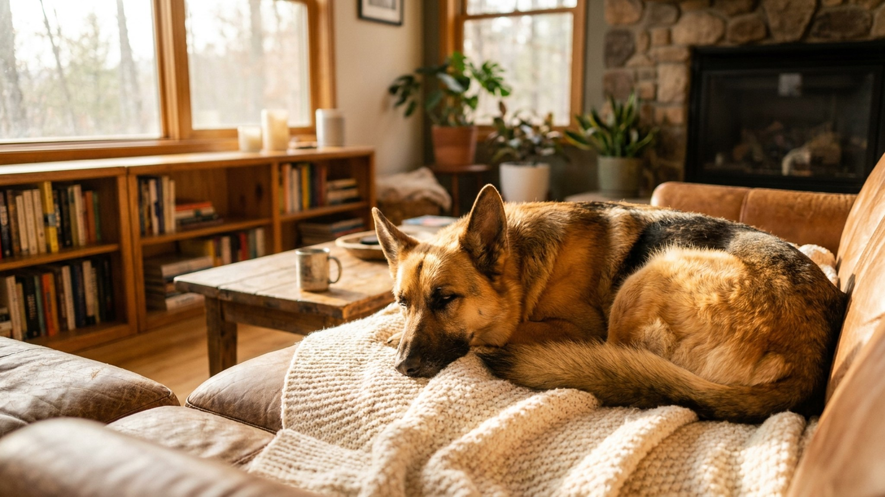

До 90 кг живого веса и рост под метр в холке — немецкий дог производит впечатление существа, которому нужны гектары пространства и три часа ежедневных пробежек. Это миф. Дог — один из самых спокойных гигантов: ему важнее мягкое место рядом с хозяином, чем марафон. Но у породы есть свои особенности в росте, кормлении и ритме жизни, которые нужно знать заранее.
🐾 Питомец ведёт себя странно?
AnimaLife расшифрует поведение кошки и собаки и подскажет, что делать. Попробуйте бесплатно прямо в мессенджере.
Немецкий дог — порода с мягким, дружелюбным характером. Несмотря на внушительный вид, доги не агрессивны и не склонны к доминированию. Они привязаны к семье, терпеливы с детьми и охотно уживаются с другими животными при правильном знакомстве.
Щенок немецкого дога набирает вес стремительно: к году он уже почти взрослый по размеру, но скелет и связки ещё формируются. Именно в этот период перегрузка суставов закладывает проблемы на годы вперёд.
Взрослый немецкий дог ест много — это очевидно. Но важнее не количество, а режим и подача корма. Крупным собакам рекомендуют кормить 2–3 раза в день небольшими порциями и не давать активную нагрузку сразу после еды — желудок у гигантов расположен не так, как у малых пород, и после плотного приёма пищи он требует покоя.
Миски лучше ставить на подставку нужной высоты: псу не нужно низко наклонять голову, что комфортнее и для шеи, и для пищеварения. Воды всегда должно быть вдоволь.
Средняя продолжительность жизни немецкого дога — 8–10 лет, нередко меньше. Это реальность гигантских пород: чем крупнее собака, тем короче её век. Это не повод отказываться от породы, но повод относиться к каждому году осознанно.
🐾 Здоровье питомца под контролем
AI-ветеринар, дневник здоровья и персональные советы для вашего питомца — установите AnimaLife бесплатно.
🐾 Понравился разбор?
Подпишитесь на канал — каждый день разбираем по одному тревожному симптому у кошек и собак: что в пределах нормы, а когда пора к врачу. Подпишитесь, чтобы не пропустить разбор, который может спасти здоровье вашего питомца.
Материал носит информационный характер и не заменяет очную консультацию ветеринара.